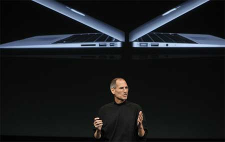

'Siêu mẫu' MacBook Air mới ra mắt tuần sau
Hàng loạt thông tin về việc Apple chuẩn bị trình làng mẫu laptop siêu mỏng thế hệ mới với những cải tiển về bộ nhớ, tốc độ và kết nối liên tiếp xuất hiện những ngày qua.
MacBook Air thế hệ hai được Steve Jobs giới thiệu vào tháng 10/2010. Ảnh: AllThingsD.
Trang Apple Insider khẳng định MacBook Air sẽ có RAM nhân đôi từ 2 GB lên đến 4 GB nhằm khai thác ổ lưu trữ SSD 64GB mà được thay thế bằng ổ 128 GB và 256 GB.
Trong đó, AllThingsD - trang web thường đưa thông tin khá chính xác về các sản phẩm chưa ra mắt của Apple - khẳng định MacBook Air sẽ xuất hiện vào tuần sau, tích hợp chip Sandy Bridge, cổng Thunderbolt và bàn phím backlit.
MacBook đen là niềm mơ ước của khá nhiều tín đồ Apple. Ảnh minh họa: Macrumors.
Trước đó, trang Macrumors tin rằng MacBook Air mới sẽ có thêm bản màu đen với giá cao hơn một chút so với bản màu bạc. Tuy nhiên, không ít người tỏ ra nghi ngờ trước thông tin này bởi vỏ máy đen thường lộ dấu vân tay và đó là một trong những lý do Apple chưa từng công bố MacBook Air hay MacBook Pro màu đen